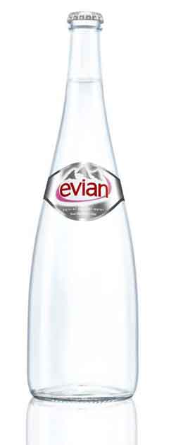
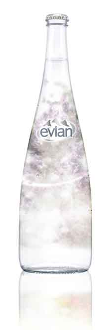

-
원하는 질문이 이곳에 없다면?
jalza87@naver.com
ssongki@gmail.com물에 대한 질문 Q / A
Let's talk about your Question
Borad 게시판을 이용해 주시길 바랍니다.-
Q.생수를 마시는 타이밍을 알려주세요
A.물은 한번에 많이 마셔도 대부분이 소변으로 배출되어 버립니다. 항상 몸 속에 물을 돌기 위하여 한번에 많은 물을 마시는 것이 아니라 조금씩 마시는 것이 좋다고 여겨지고 있습니다. 한번에 컵 반 정도 (약80ml)를 기준으로 대체로 30분에서 1시간 간격으로 마시는 것이 이상적 입니다.
-
Q.하루에 마시기 좋은 양을 가르쳐 주세요.
A.개인차는 있지만 하루 마시고 좋은 물 한계량은 3리터라고 합니다.일반적으로 물을 제대로 마시면 목구멍은 수분이 있습니다. 하지만 한도를 초과하는 물을 마시면 아무리 물을 마셔도 갈증이 들어가지 않습니다. 그렇다면 물을 과음해 버립니다.
-
Q.에비앙 경수 있습니까? 연수인가요?
A.에비앙은 경도 304 경수입니다. 현대인에게 부족하기 쉬운 미네랄이 균형있게 포함되어 있기 때문에, 한국인이 마시기 좋습니다.
-
Q.에비앙의 경도는 얼마입니까?
A.에비앙의 경도는 304mg / l의 경수입니다.경도는 "물 1000ml 속에 녹아있는 칼슘과 마그네슘의 양"을 나타내는 숫자입니다. 120mg / l를 초과하면 "경수"120mg / l 이하의 것을 "연수"라고합니다.
-
Q.여과 및 살균은하고 있습니까?
A.EU 생수의 기준에 따라 여과 및 살균은 행하고 있지 않습니다. EU 생수의 기준은 일본의 것과 달리 살균 처리를하지 않는 것이 의무화되어 있습니다. 가열하면 물의 조성은 변해 물이 본래 미네랄의 맛이 원래이라고도 할 수있는 산소와 탄산가스가 없어져 버리기 때문입니다.
-
Q.아기와 아이에게 먹여도 괜찮습니까?
A.에비앙 물은 유럽의 엄격한 기준을 충족
-
Q.어디에서 팔고 있나요?
A.전국의 슈퍼마켓이나 편의점, 자동 판매기 등에서 구입하실 수 있습니다. 또한 공식 사이트 "건강 상태"에서 구입하실 수 있습니다.
-
Q.에비앙을 분유에 섞어서 사용할 수 있습니까?
A.분유 화가 유방에 관해서는 기본적으로 문제 없습니다. 의사, 조산사, 분유의주의 사항에 따라 이용해주십시오. 이용 시에는 반드시 비등시킨 후 70 ℃의 온수로 이용하십시오.
-
Q.에비앙의 수원은 어디에 있습니까?
A.세계 최고의 자연 보호 구역이다 프렌치 알프스의 일부 해발 850 미터에 위치한 고원 있습니다.
-
Q.에비앙 제품에 대한 질문은 이쪽에서 문의해주십시오.
A.접수 시간 : 9:00 ~ 17:00 (토 · 일 · 공휴일 및 여름 · 연말 연시 휴업일 제외) 토 · 일 · 축일은 휴가로하겠습니다.
 -
Q.생수를 마시는 타이밍을 알려주세요
-
Our Board
에비앙 제품에 대한 질문은 이쪽에서 문의해주십시오.
